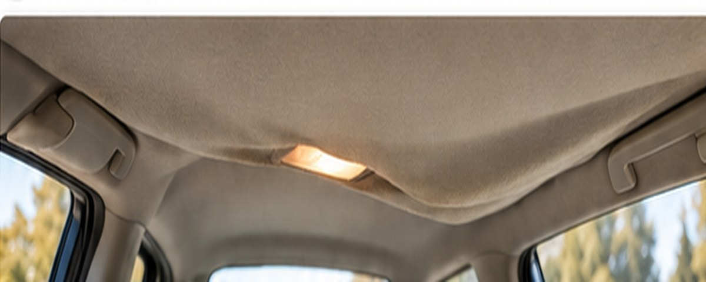

How to Fix a Sagging Headliner
A practical guide to what causes headliners to sag, which fixes are temporary, and when a proper replacement is the better move.

1. Why headliners sag
Most modern headliners are a layered system: fabric, foam and a molded backing board. Heat and age can break down the foam layer. Once the foam turns to dust, simply spraying adhesive through the fabric usually creates a short-lived or uneven repair.
Heat & age
Repeated heat cycles accelerate foam and adhesive breakdown.
Moisture
Leaks and humidity can weaken material and adhesive.
Wear
Touching, pulling and vibration can speed up separation.
2. What you will need
- Trim-removal tools appropriate for your vehicle.
- Headliner fabric or matching replacement material.
- High-temperature headliner adhesive.
- Soft brush or foam-safe surface prep tools.
- Clean work area and enough room to remove the board without bending it.
3. Basic replacement process
Take down trim, handles, visors and other items that hold the headliner board in place.
Pull off the failed fabric and gently remove deteriorated foam from the board.
Follow the adhesive maker's instructions and work in manageable sections.
Smooth the new material without stretching it or pressing hard enough to create marks.
4. Common mistakes
- Using a general-purpose adhesive that cannot tolerate cabin heat.
- Gluing new fabric over crumbling foam.
- Bending or cracking the backing board during removal.
- Stretching fabric so tightly that it lifts later around contours.
5. Helpful product categories
High-temp headliner adhesive
Use a product specifically rated for automotive headliner work.
See Options →